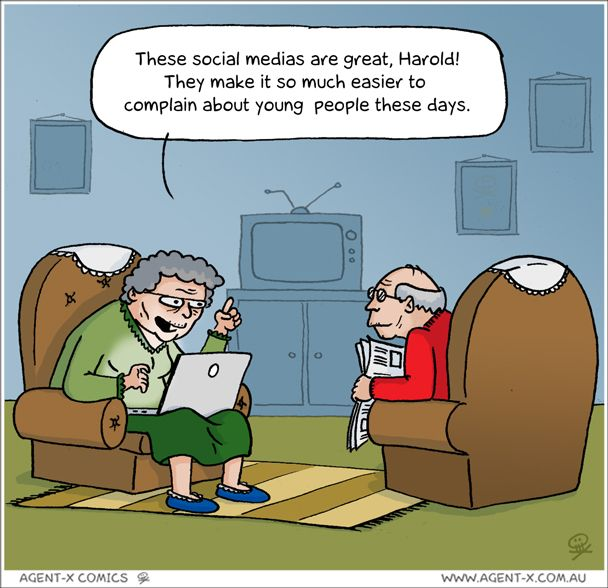

Stereotypes of the Elderly
Although becoming old is associated with wisdom and knowledge, many people see old people as grumpy and perpetually angry, and that many often become out of shape and unhealthy due to laziness and neglect to their body.
- I want to give my children and grandchildren the knowledge I gather throughout my life, and become a source where they can ask anything and I can help.
- As many elderly people nowadays can't keep up with the latest technology, they become frustrated and against innovation. I want to be the opposite of this, comprehend technology to the same extent I do today, if not better. I want make hacking my hobby when I grow older, since I'd have the time and resources to take things apart and study them better.
- I don't want to neglect my health as I get older, when complications arise and life threatening issues occur.